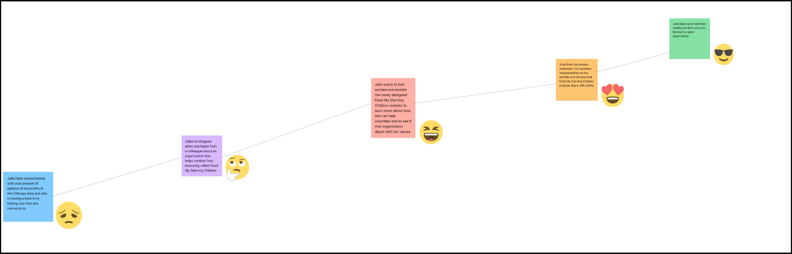
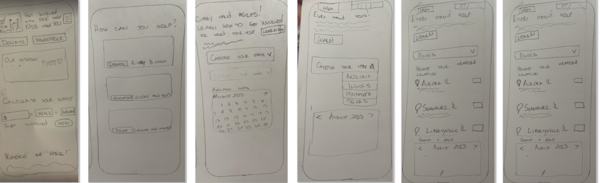

Feed my Starving Childreen
Project OVERVIEW
The Problem Statment
People are usually inclined to help those in need. So, they usually look for non-profit organizations that align with their values. Helping “Feed My Starving Children” might prove challenging for those looking to contribute given that information about the organization and who they help is not that easy to find
Solution and Goals
Redesign their website so that it showcases its mission and prominently displays those who they have helped indicating how easy it is to get involved and help those in need.

Task
Reimagine the website to provide users with a clearer perspective on the organization's
My Role
Group members: Zorka Pretrova, Jimena Olivares, Dora Montes, Candy Melara. I served as a UX/UI designer, working both individually and providing support to my group in research, user interviews, prototyping, and validation.
Tools
Project Timeline
We have been working on this project for three weeks.
HEURISTIC ANALYSES-Homepage
We conducted a Heuristic Analysis following established rules, examined
the
LATCH Principles, and concluded with a list of Usability Issues and Recommendations."
Hierarchy issues:
Competitor Analysis

Very important statistics highlighted which motivate donors
No success stories featured
Big underline header
Hierarchy problems., deferent font sizes/weights, not consistent buttons and positions

The photos that are used feel real and convey emotion
FAQ's section is hard to locate
Organization mission is very clear and the leigh of copywriting text is short and impactful
Difficult to read with the neon green, black and white color choice
USER RESERCH
Users Interviews
As a group, we decided to utilize one-on-one interviews as our method of choice
because we believed that the most effective way to engage with users and gather qualitative data was
by
speaking with them directly
We created an interview plan that includes interview questions and objectives we aim to
uncover:
We conduct 5 user interviews. Here are some findings:

,,I wish non profit sides had clearer instruction on how to volunteer”
,,It deters me from website is when i am unable to find information in an easy way”

,,I like to see how my involvement with non profit impact others”

,,I know that my volunteer work is impactful as I know that it is helping the less fortunate”

,,I contribute to the organization by donating my time”
DEFINE
We synthesized data from our interviews using affinity mapping, which involved grouping similar responses and keywords to identify trends and outliers. This process helps us prioritize our users' needs. We then employed the MOSCOW method and a Prioritization matrix to categorize all the data gathered from the interviews.
Affinity diagram


Users Persona
After synthesizing our data, we developed an Empathy Map, which served as the foundation for creating our User Persona. Allow us to introduce Jolie Smith, along with her Pain Points, Needs, and Goals."

User Journey Map
UX Scenario
Julie is eager to expand her impact in the community by finding an organization she can trust, where she can witness the tangible effects of her contributions. She hopes to bring her children along as often as possible. Julie has recently heard about Feed My Starving Children and is attempting to get in touch with the organization to explore ways she can contribute. She visits the organization's website and begins reading the Mission and Impact statements to gain an understanding of their work and to explore opportunities for involvement
Goals:
Julie is seeking a nonprofit that aligns with her goal of not only engaging in community involvement but also showing her children the gratification of helping those in need.
Define Problem
During the research interviews, we discovered that our users are passionate about volunteering but have a difficult time identifying non-profits to dedicate their time to that align with their values. Given their limited time, they would benefit from finding an organization that displays a clear mission statement describing what the organization does, who the organization helps, and what difference it makes in the community. How might we help make it easier for them to decide to help and make a long-term commitment
Solution
We might be able to make it easier for people who want to volunteer or donate to focus on “Feed My Starving Children” by redesigning their website so that people can easily navigate it and find the information they need in order to choose the activities that they want to volunteer for or donate in a more permanent basis. By doing this, “Feed My Starving Children” will attract more people to its website increasing their volunteers and donors.
How our Research Highlighted the decision we made
Based on our understanding of our users, our group's target was to identify the required features.
We aimed to ensure that our users can easily find:

Site Map
After conducting five user card sorting sessions, we used the insights gathered to design the sitemap for the feature redesign. An interesting aspect of this process was our decision to rename the main feature categories to make them more approachable and provide clearer titles.


Prototyping
Wireframes sketches (Low Fidelity)

Testing and Iterating
Usability Testing Plan & Notes

The "Welcome to FMSC" message on the front page is somewhat challenging to perceive or read. The volunteer application- user scrolled down the application and noticed the progress bar and really enjoyed that”

The user selected two dates on the "select a date" screen instead of just one,but he successfully completed the sign-up process.

The user genuinely like the design and color choices. He particularly enjoyed the clear separation of sections and the abundance of pictures incorporated into the design.

,, Hierarchy could be added in the home screen to certain sections. Heading on picture on homescreen was hard to read and too small”

"She really likes the hamburger menu, but she prefers it to have a slower interaction, and she's glad it doesn't cover the entire page."
Objectives
Key learnings
- Clarification of the workflow navigation for consistency across applications.
- Increased font size where applicable to enhance readability
- Addition of new functionality in several screens based on user input.
- A change in the color scheme to incorporate more vibrant and inviting colors
The testers achieved an excellent success rate, with all reaching the testing goals at 100%.
We received a substantial amount of feedback, which we analyzed and prioritized for
implementation. Some items were left in the backlog for future iterations. Notable
implementations include:
Final Thoughts / Conclusion
The Journey
The past few weeks have been both exciting and intense. Our group performed exceptionally well, and our collaborative experience was a true joy.
Our Project
Time seemed to fly by, and the Feed My Starving Children website redesign has been an invaluable learning experience. We've honed our design skills and become more proficient with tools, especially Figma. As it's often the case, we feel that more time would have allowed us to fully realize our vision. Nevertheless, we're content with what we've accomplished in a relatively short span, and we're grateful for the opportunity to collaborate with such a remarkable group of classmates. While we wish we could have conducted further iterations to enhance our prototypes, we understand that this work is ongoing, and we're satisfied with where they stand today.
Future developments
- Fully develop the other ways to give ( Donate and FMSC shop)
- Conduct more research and user testing
- Explore the possibility of interviewing FMSC executive staff (we made an attempt)
- Distribute a qualitative survey to gain additional insights.
AHA Moments
We recognize the importance of finalizing our color scheme and typography choices earlier in the process.
What’s next?
Our journey of learning continues, and we're excited about the future. It can only get better!